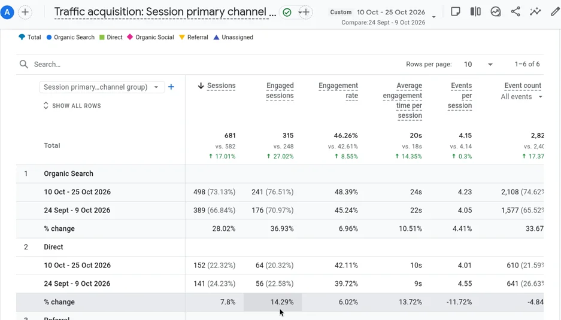
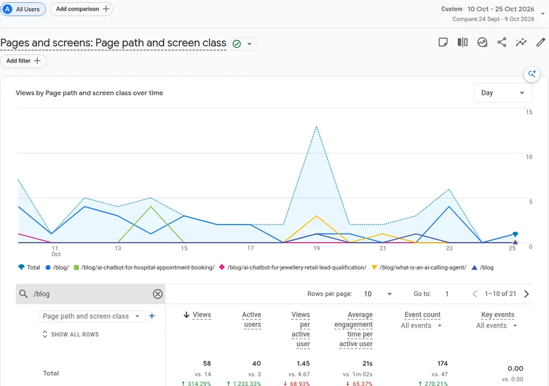
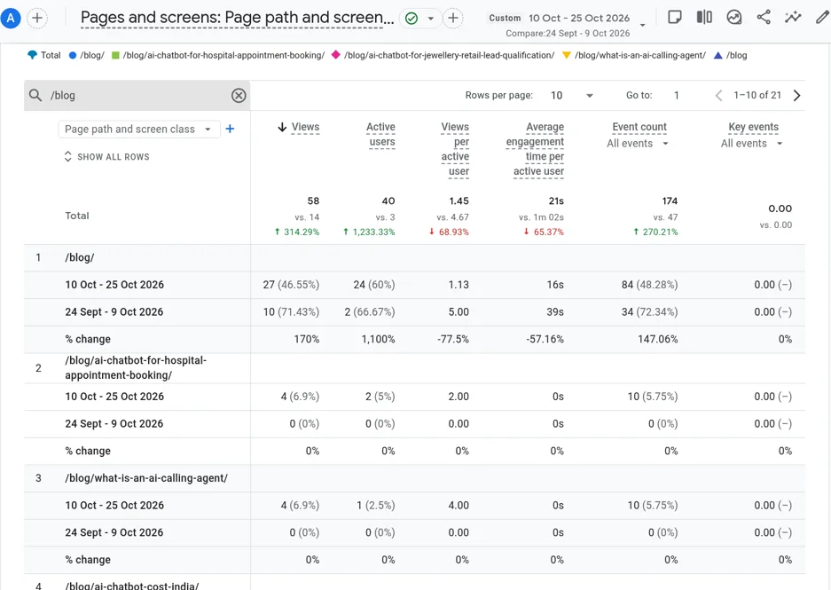

This AI SEO agent case study uses our own website, claraai.tech. Our AI SEO agent started on 10 Oct 2026. In the 16 days from 10 to 25 Oct, organic search sessions rose to 498 from 389 in the 16 days before (+28%), and blog page views rose to 58 from 14. Below are the real Google Analytics 4 screenshots, what the agent did, and what we would and would not read into them.
An AI SEO agent is software that does the daily work of search marketing for you. It finds the questions your buyers type into Google and AI assistants, writes posts that answer them, publishes on a schedule, links each post to the right service page and keeps the technical basics in order. It does the same tasks a content marketer does, but it runs every day without needing reminders.
We wanted proof we could show without asking a client for permission, so we ran our own AI SEO Agent on claraai.tech first. Every number in this post comes from our own Google Analytics 4 property. We compare two equal 16-day windows: 24 Sep to 9 Oct 2026, before the agent, and 10 to 25 Oct 2026, after it started.
The channel chart at the top of this post shows sessions by channel over time. The solid lines are 10 to 25 Oct 2026; the dotted lines are the 16 days before. Organic search, the traffic that comes from people searching, is the line that moved most.

Total sessions across all channels rose to 681 from 582 (+17%). Organic search grew faster than the site as a whole, which is what you would expect if the new content is what is bringing people in. Engaged sessions, visits where people actually stay and read, grew even faster at +37%, so the extra traffic is not just people bouncing straight off.
Traffic only matters if people read the content. Before the agent started, the blog had almost no readers. In the 16 days after, blog page views went from 14 to 58 and active blog readers went from 3 to 40.


We would rather be honest than impressive. These are early results from a small, young site, so a few cautions apply:
Even with those cautions, the direction is clear: once content went out every day, more people found the site through search and stayed to read.
| Task | Without an agent | With Clara's AI SEO agent |
|---|---|---|
| Topic research | Done now and then, often skipped | Buyer-intent topics planned in clusters |
| Writing | One post a month, if someone has time | One post a day, every day |
| Internal links | Forgotten | Every post links to your service pages |
| Indexing and sitemap | Manual | Handled with each post |
| Reporting | Rare | Weekly numbers on traffic and leads |
The same approach works for any B2B company whose buyers search before they buy: real estate developers, manufacturers, consultants, software firms and service businesses. If your buyers ask questions on Google or ChatGPT before they pick a supplier, an agent that answers those questions every day puts you in front of them. If you also sell through LinkedIn, our AI LinkedIn Outreach Agent works alongside it. For background, read what a custom AI agent is.
Book a free demo on WhatsApp and tell us what your business does and what you want from search. We look at your site, agree the first topic cluster and the facts the agent may use, and aim to show you a first demo within 7 days. GA4 numbers in this post are our own, measured as described in Google's guide to GA4 traffic acquisition.